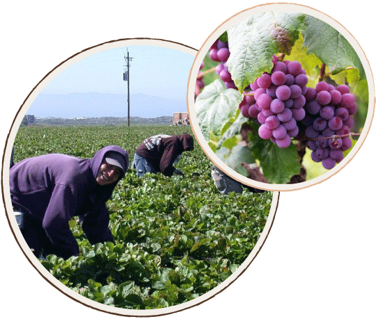

greeting
～ごあいさつ～
オーナー兼パティシエール/山本恵那
初めまして。
Pattisserie
Fruit（パティスリーフリュイ）オーナーの山本恵那です!
みなさまに美味しいお菓子を食べていただけるよう、
毎日心を込めて作っております。
みなさまにお越しいただけることを心よりお待ちしております。
＜経歴＞
- ○○年
- 国際製菓専門学校 卒業
- ○○年
- パリにて本場で技術を学ぶ
- ○○年
- 日本に帰国、Patisserie Fruitを開店
Concept ～パティスリーフリュイについて～
Cooperation～地域協力～
地元・東大泉の農家さんとの提携
地域に貢献したいという思いから、東大泉にて栽培され
た旬のフルーツや野菜を提携農家さんから直接買い付け。
身近な顔の見える生産者さんばかりなので、安心して購入
いただけます。地元のフルーツをパティスリーフリュイの
オリジナルケーキでお楽しみください。

line
Freshness～鮮度へのこだわり～
常にフレッシュな旬のフルーツを使用
地産地消ならではの春夏秋冬、それぞれの季節に収穫
される旬の朝採れフルーツを贅沢に使った彩りの良い
フルーツケーキが自慢です。
看板商品のフルーツタルトをはじめ、収穫状況によって
毎月変わる季節限定の商品もご用意しております。